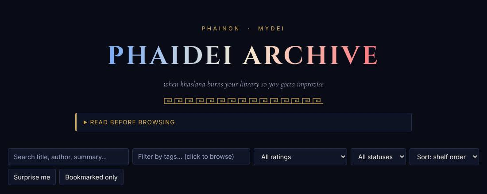

koodina.github.io/phaidei-archive435 works
Chapter I · fan archive · 2026
Phaidei Archive
"when khaslana burns your library so you gotta improvise"
When AO3 went down, all our favorite Phaidei fics were stuck in a messy Google Drive. So I built a proper library for them: every work saved from the Phaidei drive, with its tags kept, so you can actually find what you want to read.
- Search by title, author or summary, and filter by any tag, rating or status
- A "Surprise me" button for when you can't decide
- Bookmarks that live only in your own browser
- A built-in reader, fed by a little Python script that turns saved epubs into data
435works archived
0ads or AI
HTMLCSSJavaScriptPython
Open the archive ↗